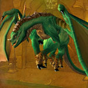

You can find the Temple of Atal’Hakkar dungeon within Swamp of Sorrows, Eastern Kingdoms.
The coordinates are (69.6,54.1)


Route:
Map 1

Bosses:
1. Jammal'an the Prophet2. Avatar of Hakkar3. Wardens of the Dream4. Shade of Eranikus
Quick Boss Tactics:
/i Ogom the Wretched: Interrupt Shadow Bolt. Jammal’an the Prophet: Heals an ally with Healing Wave. Avoid standing in fire patches. Earthgrab Totem roots nearby players. Beware of Hex of Jammal’an, don’t let transformed player attack you.
/i Ogom the Wretched: Interrupt Shadow Bolt. Jammal’an the Prophet: Heals an ally with Healing Wave. Avoid standing in fire patches. Earthgrab Totem roots nearby players. Beware of Hex of Jammal’an, don’t let transformed player attack you.
Quick Boss Tactics:
/i Curse of Tongues reduces your casting speed by 50%. Lash stuns current target. Cause Insanity makes a player attack group with increased attack & movement speed.
/i Curse of Tongues reduces your casting speed by 50%. Lash stuns current target. Cause Insanity makes a player attack group with increased attack & movement speed.

Quick Boss Tactics:/i You will fight four green dragons. Dreamscythe & Weaver (middle, The Pit of Sacrifice). Hazzas & Morphaz (before final boss). Move away from green Acid Breath damaging all in front. Wing Flap knocks all players in front backwards.
Quick Boss Tactics:
/i Puts a player to sleep for 8 sec. Thrashes current target, hitting x2 more. War Stomp stuns all players nearby. Move away from green Acid Breath damaging all in front.
/i Puts a player to sleep for 8 sec. Thrashes current target, hitting x2 more. War Stomp stuns all players nearby. Move away from green Acid Breath damaging all in front.